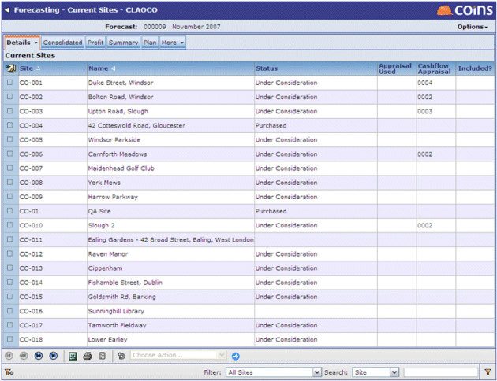

The Current Sites screen shows details of the developments within

Against each site the number of the Cashflow Appraisal is displayed (if applicable).
You can include or exclude sites from the forecast by using the action at the bottom of the screen.
You can remove a site again by selecting Remove Site from Forecast.
If the appraisal to be used in Forecasting changes, you can update the forecast using the Update Site Appraisal Used option.
NOTE